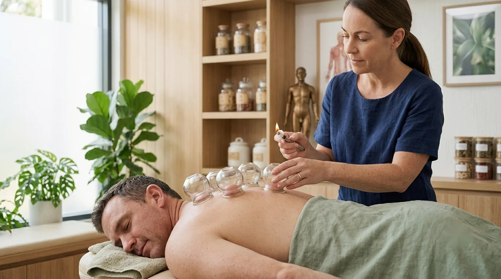
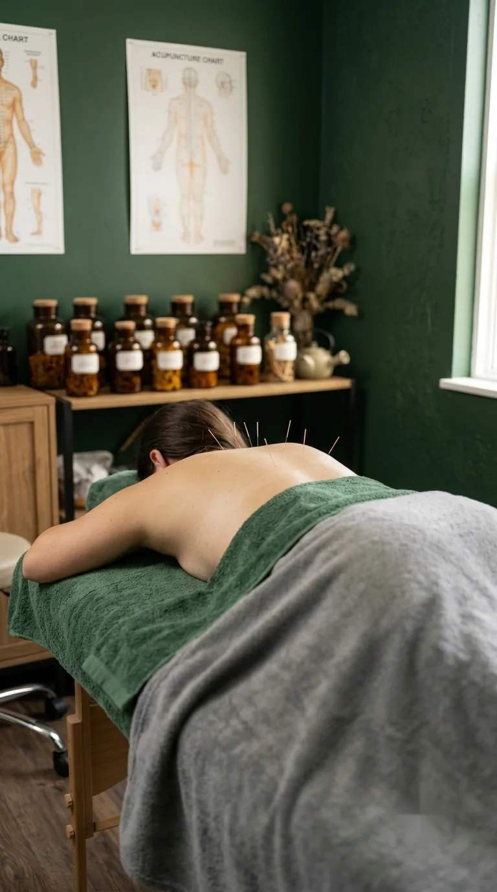
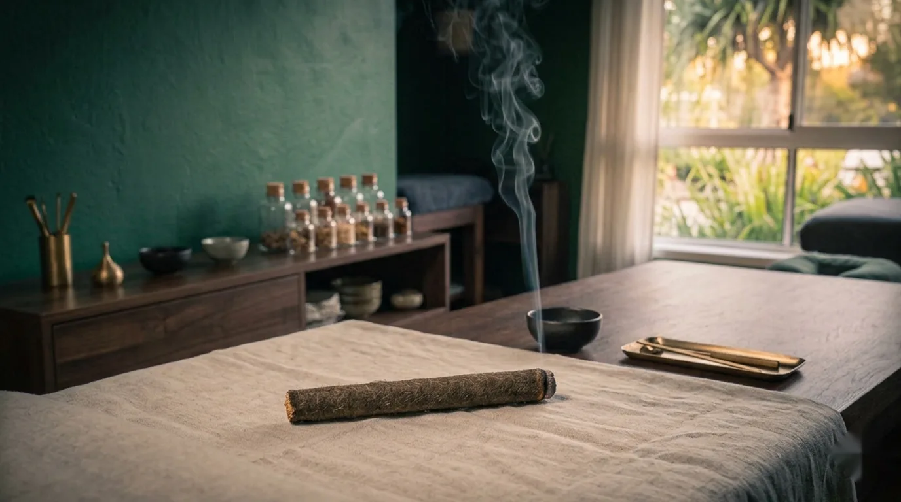

90 minutes · first visit
Your First Appointment
A thorough first visit to understand your health history and begin treatment.

- Duration
- 90 minutes
- Best for
- New clients
- Hours
- Tue 12–5pm
- Where
- Mermaid Beach
The appointment
Your first appointment at Ānshén Acupuncture in Mermaid Beach is an unhurried 90 minutes: time to be properly heard, assessed and gently treated.
Your initial acupuncture consultation is a 90 minute appointment where we review your health history, current concerns and treatment goals. A Chinese medicine assessment is completed before your personalised treatment begins.
Treatment includes acupuncture and, where appropriate, cupping, moxibustion or gua sha can be added.
What's included
- Time to discuss your health story in detail
- Space to talk through what you'd like treatment to achieve
- A thorough assessment to understand the broader picture, not just the symptom
- A treatment tailored to what we find, not a fixed protocol
- Additional techniques like cupping, moxibustion or gua sha, if they'll help
- Clarity on what to expect next, so nothing feels uncertain
Treatments are provided by an AHPRA-registered practitioner. New patients welcome.


Good to know
Common questions.
Why is the first appointment longer?
The 90 minutes allows time for a full history, a conversation about your goals, and a Chinese medicine assessment before treatment begins, without rushing any part of it. That groundwork shapes everything that follows, so it's time well spent before any needles are used.
What should I bring?
A list of any medications or supplements you take, and details of anything you're currently being treated for. Wear loose, comfortable clothing if you can, ideally something that gives easy access to your arms and legs.
Will I have needles at the first appointment?
Yes. The assessment is completed first, then your personalised treatment begins within the same appointment. You won't need to come back for a separate visit just to start treatment.
Should I eat beforehand?
Having something light to eat an hour or two before your appointment is a good idea. It's best not to arrive very hungry or immediately after a large meal.
What happens afterwards?
We'll talk through what we found, suggest a plan for next steps, and answer any questions before you leave. Most people head straight back into their day, though some prefer to take it a little easier for the rest of the afternoon.
Designed to help you feel at ease
Ready when you are.
If you've never had acupuncture before, it's completely normal to have questions. Your first appointment is unhurried, giving us time to understand your concerns, explain the treatment process and ensure you feel comfortable before treatment begins.